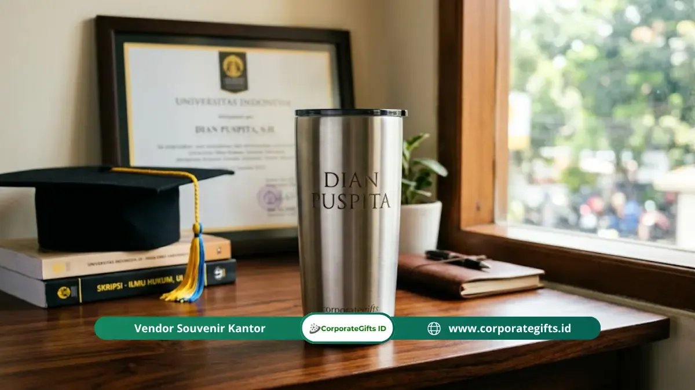

Corporate Gifts ID - Tumbler dengan nama terukir telah menjadi pilihan kado sidang skripsi paling fungsional dan berkesan di tahun 2026. Hadiah ini menggabungkan utilitas penggunaan harian dari perjalanan pagi ke kantor hingga sesi kerja lembur, dengan sentuhan personalisasi eksklusif lewat ukiran nama, gelar baru, serta tanggal kelulusan yang tidak akan pernah luntur.
Dengan kisaran harga bersahabat mulai dari Rp150.000 hingga Rp350.000 per unit, Anda sudah bisa memberikan tumbler berbahan stainless steel double wall vacuum insulated yang mampu menahan suhu panas dan dingin hingga 12-24 jam. Ini adalah investasi hadiah yang membanggakan sekaligus bermanfaat nyata bagi penerima yang sedang melangkah ke dunia profesional.
Poin Kunci Tumbler Kado Sidang Skripsi:
- Utilitas Tinggi: Langsung terpakai untuk aktivitas harian di kantor, tempat kerja baru, maupun perjalanan.
- Sentuhan Personal Abadi: Grafir laser nama dan gelar akademik menghasilkan ukiran permanen anti-terkelupas.
- Material Unggulan: Stainless steel SUS 304 food-grade dengan insulasi double wall menjaga suhu minuman tetap optimal.
- Universal: Cocok untuk semua gender, jurusan kuliah, serta gaya hidup penerima.
Mengapa Tumbler Menjadi Kado Sidang Skripsi yang Ideal?
Tumbler merupakan kado kelulusan sidang yang hampir tidak pernah gagal karena setiap lulusan baru membutuhkan wadah minum portabel yang andal. Setelah menyelesaikan sidang skripsi, mereka akan memasuki fase baru yang sangat dinamis: mengurus revisi berkas, wisuda kampus, interview kerja, hingga magang di kantor korporat.
Sebagian besar mahasiswa terbiasa menggunakan botol minum plastik biasa yang mudah aus. Memberikan kado tumbler termos premium dari Anda akan langsung menggantikan botol lama mereka dengan perangkat yang jauh lebih higienis, estetik, dan profesional saat diletakkan di atas meja kerja.
Perbedaan Kualitas Tumbler: Standar Kado vs Produk Murah
Agar kado yang Anda berikan bertahan bertahun-tahun dan tidak menimbulkan kekecewaan, perhatikan standar kualitas berikut sebelum membeli:
1. Material: Stainless Steel SUS 304 vs Plastik
Pilihlah tumbler berbahan stainless steel food-grade 304 atau 316. Material ini tahan karat, tidak menyerap bau atau rasa minuman lama, tahan benturan ringan, serta sangat sempurna saat diproses dengan mesin grafir laser. Hindari tumbler plastik murah yang rentan berubah warna dan bau setelah terkena cairan hangat.
2. Teknologi Insulasi: Double Wall vs Single Wall
Teknologi double wall vacuum insulation memiliki ruang hampa udara di antara dua lapisan dinding baja, sehingga mampu menahan suhu minuman panas hingga 12 jam dan air dingin es hingga 24 jam tanpa menimbulkan embun basah di permukaan luar (sweat-free). Tumbler single wall hanya mampu mempertahankan suhu selama 1-2 jam saja.
3. Tutup dan Gasket: Anti-Bocor vs Tutup Standar
Pastikan tumbler dilengkapi tutup dengan seal ring silikon kedap udara dan mekanisme pengunci yang rapat (leak-proof). Fitur ini sangat krusial agar tumbler aman dimasukkan ke dalam tas ransel bersama laptop dan dokumen penting tanpa khawatir bocor.
4. Sertifikasi Food Grade & BPA-Free
Selalu pastikan produk memiliki label bebas BPA (BPA-Free) untuk menjamin keamanan bahan kimia saat bersentuhan dengan minuman bersuhu tinggi dalam jangka panjang.

Presisi teknologi laser grafir menghasilkan detail tipografi nama dan gelar akademik yang tajam dan mewah.
Panduan Memilih Ukuran Tumbler Kado Sidang Skripsi
Memilih kapasitas volume yang tepat akan sangat menentukan kepraktisan penggunaan harian penerima:
| Kapasitas Ukuran | Karakteristik & Kelebihan | Kecocokan Penggunaan | Estimasi Biaya + Grafir |
|---|---|---|---|
| 350 - 400 ml | Bentuk ringkas, pas digenggam, bobot sangat ringan, ideal untuk kopi hangat atau matcha latte. | Penerima dengan mobilitas tinggi, penikmat kopi harian, dan tas selempang kecil. | Rp120.000 - Rp200.000 |
| 500 - 600 ml (Rekomendasi) | Ukuran paling universal, muat di cup holder mobil, pas di kantong samping ransel kerja. | Aktivitas kantor, studi lanjutan, dan perjalanan harian. Pilihan paling aman jika ragu. | Rp150.000 - Rp275.000 |
| 750 - 1.000 ml | Kapasitas hidrasi melimpah, insulasi dingin tahan 24 jam, bodi kokoh dan maskulin. | Penerima yang aktif berolahraga, aktivitas lapangan, atau kebutuhan asupan air tinggi. | Rp225.000 - Rp350.000 |
Estimasi Biaya Layanan Ukir Laser dan Tips Pemesanan
Layanan laser engraving untuk personalisasi tumbler saat ini sudah sangat terjangkau. Biaya jasa ukir satuan umumnya berkisar antara Rp25.000 hingga Rp50.000 per posisi, atau sudah langsung termasuk paket bundel tumbler di vendor penyedia resmi seperti CorporateGifts.ID.
Berikut beberapa tips penting saat memesan tumbler ukir nama:
- Format Tulisan: Cantumkan nama lengkap beserta gelar baru yang baru diraih (misal: Ardiansyah Pratama, S.Kom) untuk menambah kebanggaan.
- Penambahan Tanggal: Bubuhkan tanggal kelulusan sidang skripsi di bawah nama sebagai pengingat momen bersejarah.
- Pilihan Font: Pilih font bertipe Sans-Serif modern (seperti Montserrat atau Helvetica) untuk kesan elegan, atau Serif klasik untuk nuansa formal akademis.
- Waktu Pemesanan: Pesanlah setidaknya 3 hingga 5 hari sebelum hari H sidang agar produk tiba tepat waktu dengan kemasan kado yang rapi.
Rekomendasi Merek Tumbler Terbukti untuk Kado Akademik
Beberapa brand tumbler yang memiliki reputasi tinggi di Indonesia dan sangat layak dijadikan kado sidang skripsi meliputi:
1. Segmen Premium Eksekutif (Rp300.000 ke atas)
Merek ternama seperti Zojirushi (teknologi insulasi Jepang terbaik), Stanley (desain kokoh ikonik), dan Hydro Flask (estetika kasual modern) menjadi simbol prestise kado kelulusan yang berkelas tinggi.
2. Segmen Menengah Populer (Rp150.000 - Rp300.000)
Merek seperti Thermos, LocknLock, dan Mizu menawarkan keseimbangan sempurna antara daya tahan panas-dingin yang prima, bobot ergonomis, serta harga yang rasional untuk budget kado pertemanan.
3. Opsi Custom Corporate Gifts ID (Food-Grade SUS 304)
Jika Anda mencari paket tumbler siap kado lengkap dengan grafir laser nama presisi, kartu ucapan custom, dan exclusive hardbox magnetik berpita, koleksi souvenir tumbler eksklusif dari CorporateGifts.ID adalah opsi terbaik siap kirim.
Pertanyaan Umum Seputar Tumbler Kado Sidang Skripsi
Rangkuman tanya-jawab seputar pemilihan dan personalisasi kado tumbler kelulusan:
Kesimpulan: Kado Fungsional Penuh Nilai Emosional
Tumbler dengan nama terukir merupakan kado sidang skripsi yang memenuhi seluruh kriteria hadiah ideal: fungsional langsung terpakai setiap hari, relevan dengan perjalanan karir penerima, awet hingga bertahun-tahun, serta sarat akan nilai emosional berkat sentuhan ukir personal.
Pilihlah tumbler bermaterial stainless steel SUS 304 double wall berkapasitas 500 ml dengan tutup anti-bocor, dan lengkapi dengan kartu ucapan hangat. Hadiah bermakna ini akan setia menemani setiap tegukan semangat mereka dalam menapaki babak baru kehidupan profesional.


![[Update 2026] Rekomendasi Souvenir Wisuda Murah tapi Elegan - CorporateGifts.ID](../assets/img/blog/souvenir-wisuda-murah-tetap-elegan-1.webp)